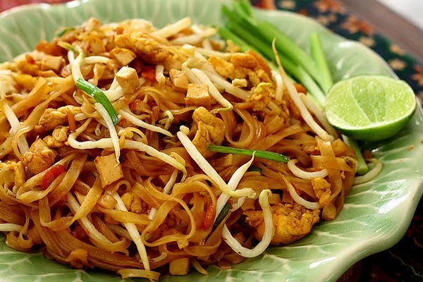

อาหาร

นายสยาม ศิริมงคล มีชื่อเล่นว่า เก๋า เกิดเมื่อวันที่ 30 เมษายน 2517
ด้านชีวิตครอบครัวสมรสกับ ฟ้าใส อรจิรา แก้วสว่าง นักแสดงหญิงที่อายุห่างกันถึง 20 ปี
ด้านการศึกษา นายสยามจบการศึกษาระดับปริญญาตรีจากคณะรัฐศาสตร์ จุฬาลงกรณ์มหาวิทยาลัย
และระดับปริญญาโท รัฐประศาสนศาสตร์มหาบัณฑิต จากสถาบันบัณฑิตพัฒนบริหารศาสตร